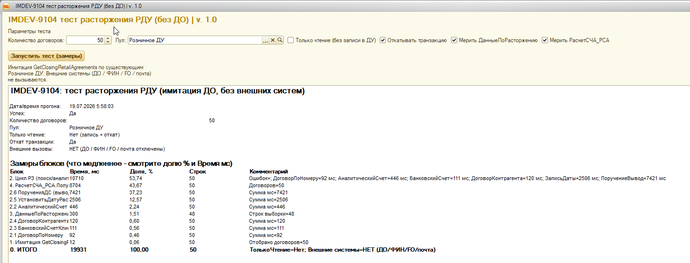

Главный рычаг — цикл СЧА/РСА × N; запись документов вне scope оптимизации
Записать() ~22% —
запись документов не ускоряем, значит по поручениям остаётся лишь пакетный поиск (~2,2 с).
Пакетный ДанныеПоРасторжению по списку дешёвый (0,3 с).

| Параметр | Значение |
|---|---|
| Обработка | внТестРасторжениеДоговоровРДУ v1.0 |
| Количество | 50 существующих договоров пула «Розничное ДУ» |
| Только чтение | Нет (запись даты + поручений с откатом) |
| Откат транзакции | Да |
| Внешние системы | Нет (ДО / ФИН / FO / почта отключены) |
| Мерить ДанныеПоРасторжению | Да |
| Мерить РасчетСЧА_РСА | Да |
| Успех | Да; ошибок в цикле нет; поручений записано 47 из 50 (3 уже существовали) |
| Источники |
screenshot_macro_50.png,
Замер_50_Договоров.pff
|
| Блок | мс | Доля | мс/дог. | Комментарий |
|---|---|---|---|---|
| 0. ИТОГО | 19931 | 100% | 399 | полный тест с блоками 3 и 4 |
| 4. РасчетСЧА_РСА | 8704 | 43,7% | 174 | P1: цикл по каждому договору |
| 2. Цикл РЗ | 10710 | 53,7% | 214 | из них запись поручений ~22% ИТОГО — не ускоряем |
| 2.6 Поручения на вывод | 7421 | 37,2% | 148 | SELECT ~11% + Записать ~22% ИТОГО |
| 2.5 Запись даты расторжения | 2506 | 12,6% | 50 | N× Записать() ДоговорДУ (запись — не трогаем) |
| 2.2 Аналитический счет | 446 | 2,2% | 9 | приемлемо |
| 2.4 / 2.3 / 2.1 | 323 | 1,6% | 6 | брокер / банк / НайтиПоКоду — не узкие |
| 3. ДанныеПоРасторжению | 300 | 1,5% | 6 | 48 строк; пакетный запрос лёгкий |
| 1. Имитация GetClosing… | 12 | 0,1% | 0,2 | не узкое место |
Цикл РЗ без подблоков 3/4 ≈ 10,7 с. Сумма 2.1–2.6 внутри цикла совпадает с детализацией в комментарии строки 2.
Файл Замер_50_Договоров.pff, 1025 строк профиля. t1 = с детьми, t2 = собственное время.
ПолучитьСуммыРСА_СЧА: 8,64 с / 50 = ~173 мс на договор (44% ИТОГО).
Вызов в цикле по каждому договору. Два тяжёлых SELECT в менеджере:
L218 5,62 с (~28% ИТОГО) + L507 УУ 2,17 с (~11% ИТОГО).
Модуль Документ.РасчетСЧА_РСА.МодульМенеджера — лидер по собственному времени (t2 ≈ 7,8 с).
| Участок (PFF) | t1, с | t2, с | N | Доля ИТОГО |
|---|---|---|---|---|
ПолучитьСуммыРСА_СЧА (вызов из теста) |
8,64 | 0,06 | 50 | ~43% |
РасчетСЧА_РСА.МодульМенеджера L218 Запрос.Выполнить |
5,62 | 5,62 | 50 | ~28% |
РасчетСЧА_РСА.МодульМенеджера L507 ЗапросУУ.Выполнить |
2,17 | 2,17 | 50 | ~11% |
Направление: пакетный расчёт / кэш по массиву договоров вместо N независимых вызовов.
| Участок (PFF) | t1, с | Доля ИТОГО | Действие |
|---|---|---|---|
| L576 SELECT поиска Поручение | 2,22 | ~11% | можно: пакетный запрос по массиву |
L602 Поручение.Записать + подписки |
4,33 | ~22% | не трогаем |
ВЫБРАТЬ ПЕРВЫЕ 1 Поручение.Ссылка ИЗ Документ.Поручение ГДЕ ДоговорДУ = &ДоговорДУ И ВидОперации = ВыводИзДУ И Комментарий = &Комментарий И НЕ ПометкаУдаления
ДоговорДУОбъект.Записать() ≈ 2,3 с (~12% ИТОГО) — тоже путь записи.
Имеет смысл только skip, если дата уже равна (без лишнего Записать), не «ускорение записи».
ДанныеПоРасторжению по списку — 0,30 с (1 вызов, 48 строк).| Действие | Ожидаемый эффект | Контур | |
|---|---|---|---|
| P1 |
Убрать цикл «СЧА/РСА на каждый договор»: пакетный
ПолучитьСуммыРСА_СЧА / кэш / один проход по массиву
(сейчас 2 тяжёлых запроса × N)
|
до −8,7 с на 50 (~−44% ИТОГО) | форма / полное закрытие |
| P2 | Пакетный поиск существующих поручений (один SELECT по массиву вместо N× L576). Запись поручений не трогаем (~22% ИТОГО) | до −2,2 с (~−11% ИТОГО) | РЗ |
| P3 |
Skip УстановитьДатуРасторжения, если дата уже равна
(избежать лишнего Записать, не «ускорять запись»)
|
до −2,5 с на повторных прогонах | РЗ |
| P3 | Мелкие поиски 2.1–2.4, полный ДанныеПоРасторжению |
низкий ROI / укороченная версия уже 0,3 с | — |
Правило: доли «Записать()» в профиле — стоимость платформы/подписок, в план оптимизации не входят. Считаем только чтение/алгоритм/N+1 запросов.
| Гипотеза до замера | Факт |
|---|---|
| СЧА в цикле формы тяжёлый | Главный: 8,7 с / 44% ИТОГО — P1 |
| ПорученияДС — главный кандидат РЗ | Макроблок 37%, но ускоряемо только SELECT (~11%); запись (~22%) вне scope |
| Убрать N+1 на ДоговорПоНомеру / банк | Сами поиски дёшевы (< 1 с суммарно) |
| Не писать дату повторно | Имеет смысл как skip Записать (P3), не как ускорение записи |
| ДанныеПоРасторжению — основной кандидат уровня 3 | Не подтверждено для укороченного запроса по списку (0,3 с) |
ПолучитьСуммыРСА_СЧА (L218 / L507) — можно ли пакетно по массиву договоров.